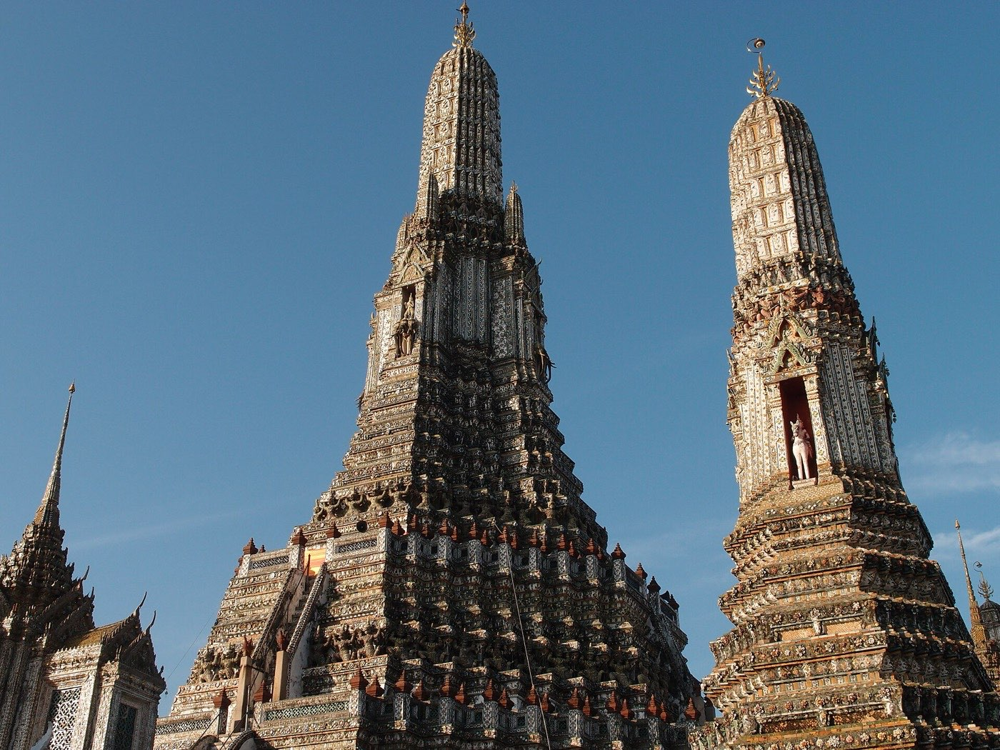
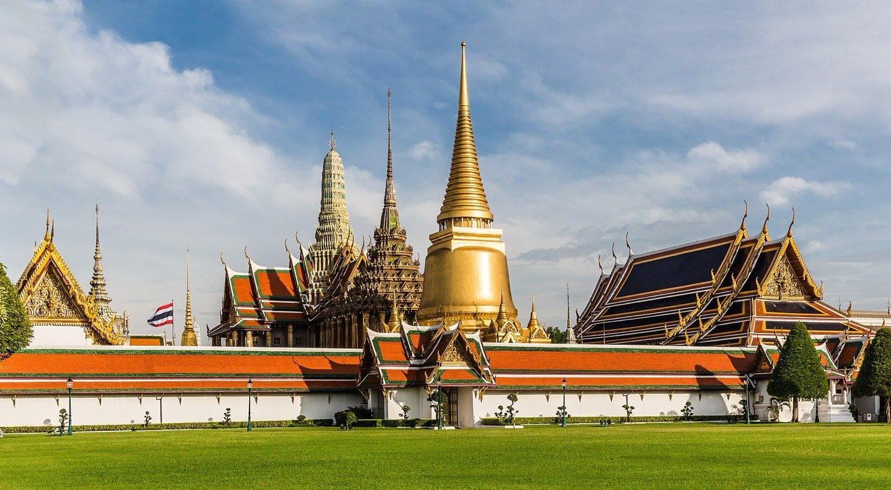
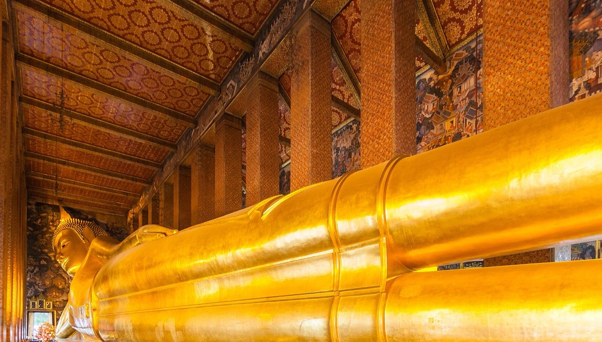
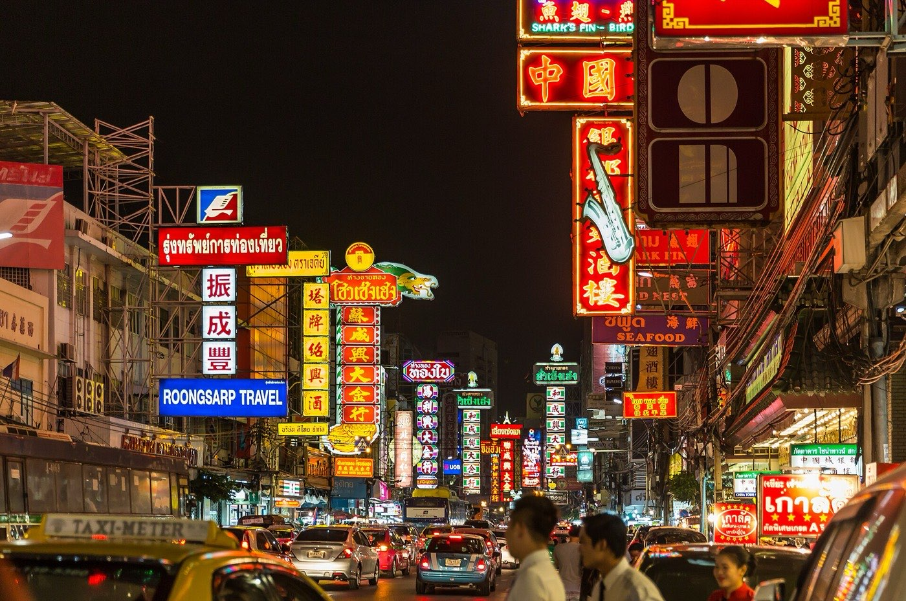

Bangkok · 3 days
3 Days in Bangkok: What You Actually Have to See
Three days is enough for Bangkok's essentials, but only if you stop treating it as a walking city. Here is what genuinely has to be on the list, in the order that keeps you out of the worst heat and the worst traffic.

Three days covers Bangkok's essentials comfortably: the royal temples in Rattanakosin, the river and Chinatown, and the markets. What it does not cover is Ayutthaya, which needs a full day of its own and is the thing most three-day itineraries wrongly try to squeeze in.
The plan below groups everything by neighbourhood and by time of day. Bangkok is flat, so the enemy here is not gradient. It is heat and traffic. A three-kilometre taxi ride at six in the evening can take longer than the same trip by boat, and the difference between a well-ordered day and a badly ordered one is roughly two hours sitting still in a car.
The clock sets the order, not the map. The Grand Palace stops selling tickets in mid-afternoon, currently 3.30pm, and by eleven in the morning it is the hottest and most crowded place you will stand all trip. It is the only stop with a hard deadline, so it goes first.
Day 1 — The Grand Palace, Wat Pho and Wat Arun
These three sit within a few minutes of each other in Rattanakosin, the old royal island, and they are the only part of the trip you can genuinely do on foot. Take them in order: palace, then Wat Pho, then across the river to Wat Arun. The day runs downhill from the crowds into the quiet.
Dress properly or you will not get in. The Grand Palace enforces the strictest dress code in Thailand, and it enforces it at the gate: shoulders covered, knees covered, no shorts, no sleeveless tops, no ripped jeans. There is a place to cover up on site, but it is another queue in the sun. Wear long trousers or a long skirt and bring a light shirt with sleeves.

The must-sees
Dress for the palace before you leave the hotel. The rest of the day is walkable from one end to the other.

Day 2 — The river, the Golden Mount and Chinatown
Use the Chao Phraya express boats as transport, not as a tour. The orange-flag service runs up and down the river all day, stops at most of the piers you want, and keeps moving while the roads above it do not.
This day ends after dark on purpose. Yaowarat, the main street of Chinatown, is a daytime traffic jam and a night-time food market, and the difference between the two is total. Do not go at four in the afternoon and conclude it is overrated.
The must-sees
River first while it is cool, one climb in the middle, Chinatown once the lights are on.

Day 3 — Markets and the modern city
This is the day that depends on your dates. Chatuchak, the enormous weekend market, opens on Friday evening and then runs all day Saturday and Sunday, and simply does not exist the rest of the week. If your three days fall Monday to Thursday, do not build a day around it, and do not let a blog talk you into a weekday substitute that is a fraction of the size.
The rest of the day is the modern city: the Skytrain, a park, air conditioning at the hottest hour. After two days of temples, the change of register is deliberate.
The must-sees
Market in the morning if it is a weekend; Jim Thompson House instead if it is not.
What to prioritise if you lose a day
| Sight | Skippable? | Why |
|---|---|---|
| Grand Palace | No | The one ticket worth the queue and the dress code |
| Wat Pho | No | The better temple, and it is next door to the palace |
| Wat Arun | No | Broken-porcelain detail you can stand under, ferry included |
| Yaowarat after dark | No | Bangkok's best eating, and it costs nothing to walk it |
| Chatuchak | Weekends only | Unmissable on a Saturday, non-existent on a Tuesday |
| Damnoen Saduak floating market | Yes | Hours of travel each way for a market staged for coaches |
| Khao San Road | Yes | Twenty minutes settles it either way |
| Rooftop bars | Optional | The view is real; so are the dress code and the prices |
What three days does not cover
Cutting deliberately beats rushing. These need more time than you have:
- Ayutthaya — a full day, not a half day. The old capital deserves better than a coach stop.
- A floating market done properly — Amphawa in the evening, on a weekend, is worth it; the coach-park version is not.
- Thonburi's canals — the other side of the river is a different city and needs an unhurried morning.
- Shopping as an activity — the malls are enormous and will eat a day if you let them.
- Anywhere outside Bangkok — the islands and the north are separate trips, not extensions of this one.
Common questions about 3 days in Bangkok
Is 3 days enough for Bangkok?
For the city itself, yes. Three days covers the Grand Palace, Wat Pho and Wat Arun, the river and Chinatown, and the markets at a reasonable pace. It is not enough to add Ayutthaya properly, which needs a full day of its own.
What are the must-see temples in Bangkok?
Wat Phra Kaew inside the Grand Palace, Wat Pho for the reclining Buddha, and Wat Arun across the river are the three nobody should miss, and they can be done in a single day. Wat Saket, the Golden Mount, is the strongest addition after those, mostly for the view.
What should I wear to the Grand Palace?
Shoulders and knees covered, for men and women alike. Shorts, sleeveless tops, crop tops and ripped jeans are all turned away at the gate. Cover-ups are available on site but that means queueing twice, so it is easier to arrive dressed for it.
Is Chatuchak market open every day?
No. Chatuchak is a weekend market: it opens on Friday evening and runs all day Saturday and Sunday. If your trip falls midweek, plan Day 3 around Jim Thompson House and the modern city instead.
Is the floating market worth it?
Not the famous one. Damnoen Saduak is hours of travel each way for a market that now runs largely for tour groups. If you want a floating market and your dates allow it, Amphawa on a weekend evening is the honest version. On a three-day trip, skipping both costs you nothing.
How do you get around Bangkok?
River boats and rail, in that order. The orange-flag Chao Phraya express boat covers the old city and the temples; the BTS Skytrain and MRT cover the modern one. Taxis and tuk-tuks are fine late at night and a poor idea in the late afternoon, when the traffic can make them slower than the boat.
How much does the Grand Palace cost?
Around 500 baht for adults at the time of writing, which covers Wat Phra Kaew inside the same walls. It is the one properly priced ticket of the trip. Most other temples charge a small fraction of that, and several are free.
Tailored to your trip
Travelling to Bangkok? Plan your trip around your real arrival and departure times.
Download iOS App